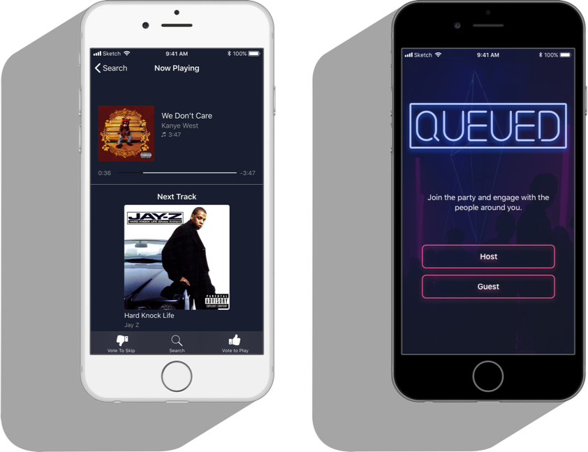
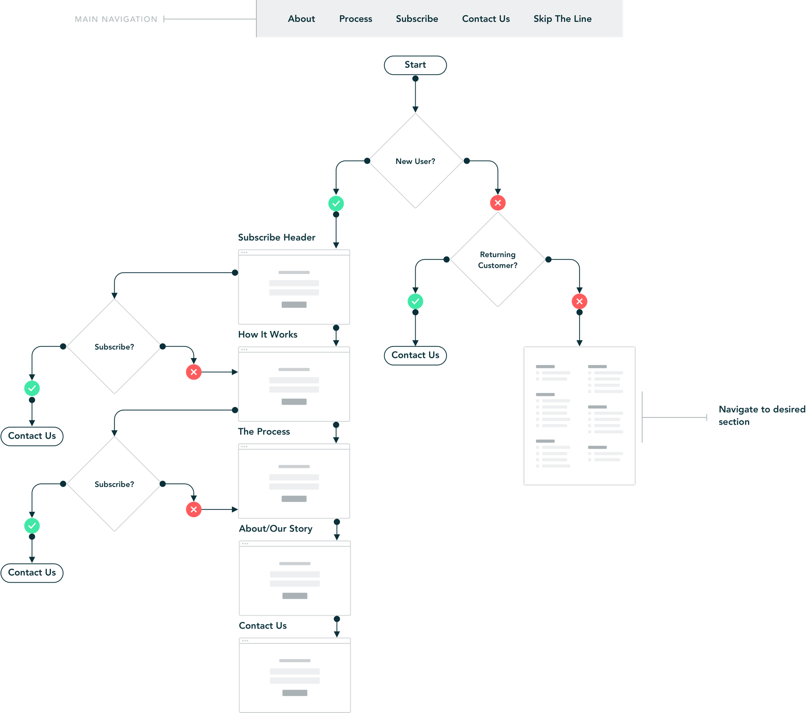
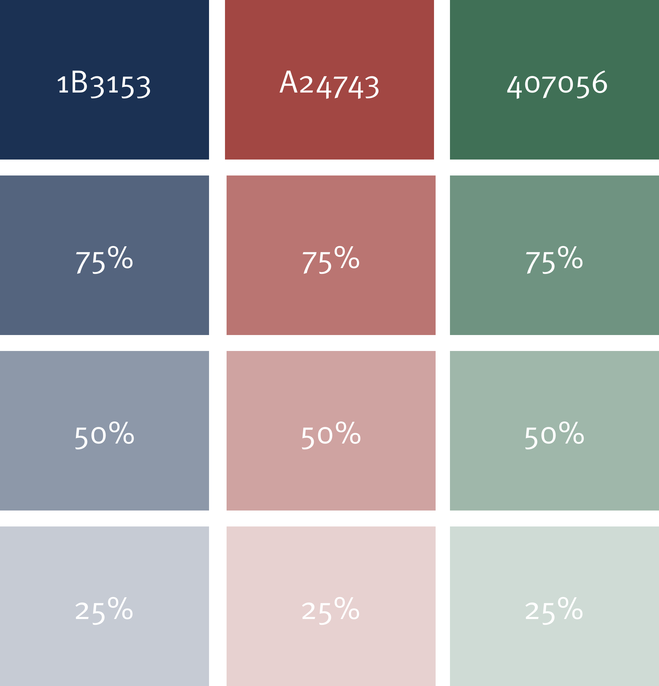
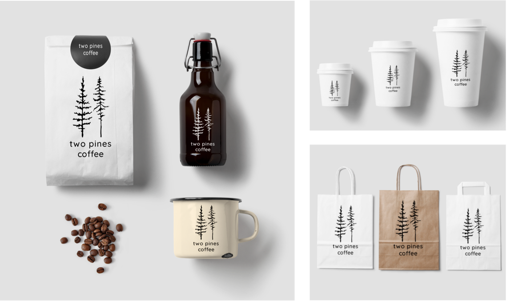
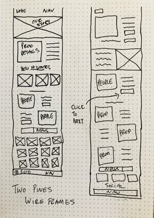
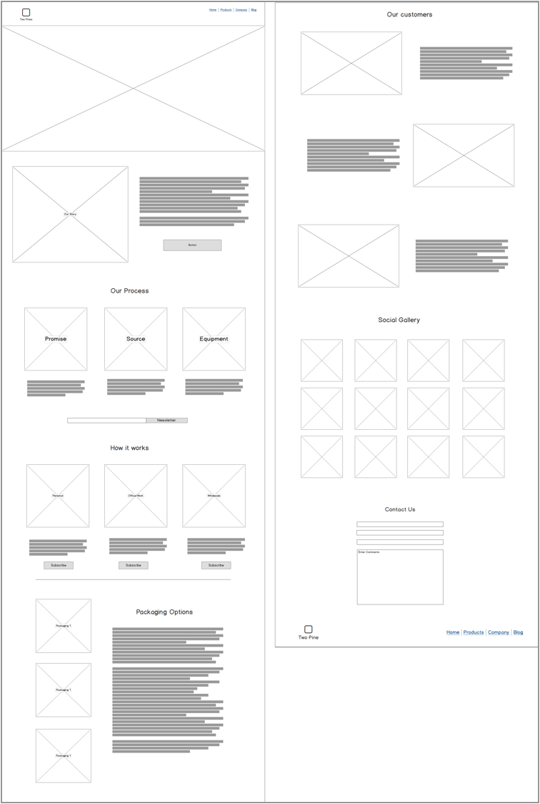
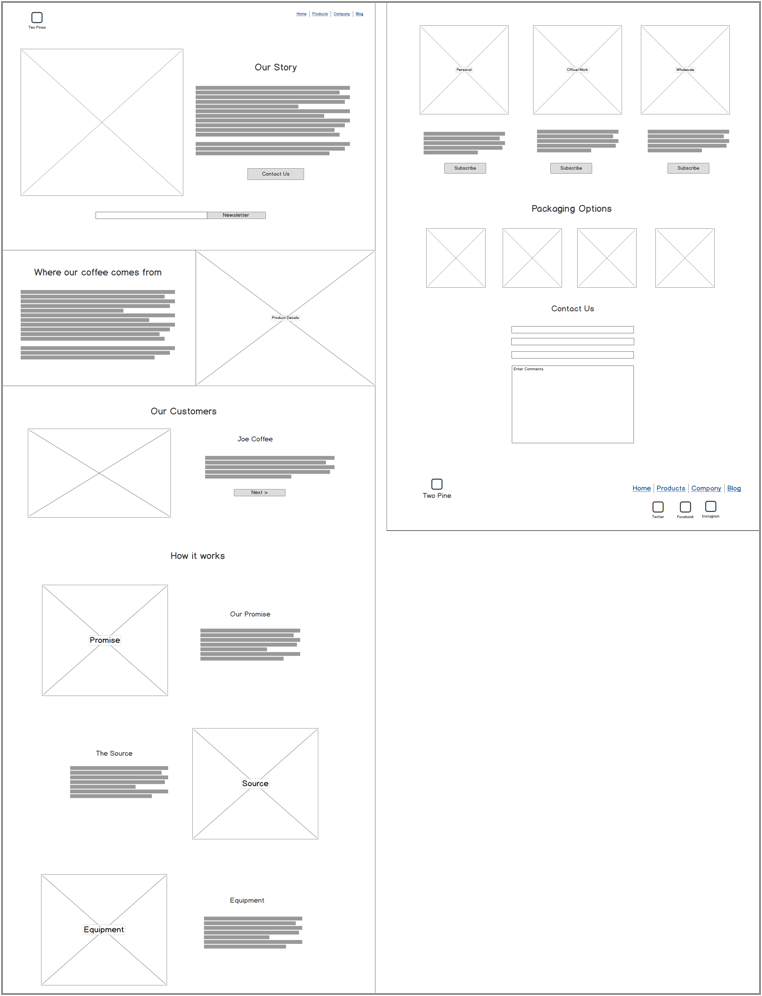
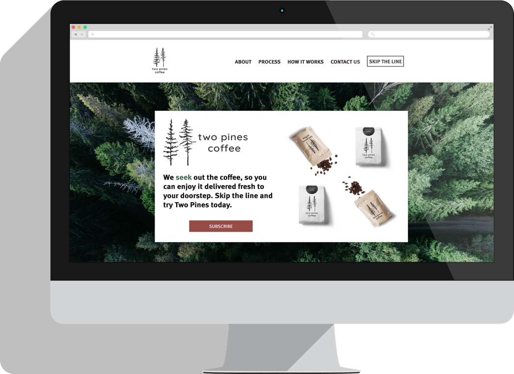

SUMMARY
Jane loves to have dinner parties and make playlists for the event. Her friends often complain about her taste in music, they always ask to her to play certain tracks or to "switch it up". They talk about the good old days when you could use a jukebox and everyone could hear what they wanted to hear and get a turn. They think music applications are so complicated to use and none of them let your guests add to the queue but not anymore! This is just one example a frustration that led to the creation of Queued.
PROBLEM
Music applications lack the ability to give your guests control and let everyone experience the fun.
- Applications are too complicated to meet the needs of wide age groups that aren't used to technology
- Most applications are missing the option to queue music to a playlist
- Technology is forcing people to be less engaged with each other in the music market
- You have to create an account or have a subscription for most applications
SOLUTION
Queued is a music application that allows the host to create a party playlist and give the guests the party passcode. The host will choose either engaged mode which allows users to add songs and then like or dislike them. If a song is disliked more than it is liked before the current playing song ends then that song will me moved to the end of the queue. The second mode is classic mode and it functions just like a classic jukebox. If a song is added to the queue then it will be played in the order it was added. The host can determine how many songs a guest can add per hour and is the only one that can delete songs from the queue.
 View PrototypeMY PROCESS
USER RESEARCH HIGHLIGHTS
96%
People use music application programs
63%
Said they want to be able to be able to add their favorite tracks to playlists at parties and events
30%
People pay a monthly subscription fee. The cost is the determining factor behind such low results
48%
Said they would pay for an app that allowed guests to control the music. This was the determining factor to create an application that allowed guests to use the hosts subscription service.
USER PERSONAS

Mike
38 y/o Photographer
“Every party I go to people seem disengaged. Between taking pictures to post on instagram and sending out tweets no one is talking to each other!”
Goals
Mike's goal is to get people to engage with each other in social environments. He would love if him and his friends wish technology could be used to bring people together.

Cheryl
65 y/o Retired School Teacher
“Technology is so over-complicated, I remember when I could push one button to get through the jukebox music and another to select the song!”
Goals
Cheryl's goal is to get find a music app that is free to use, doesn't require an account to use and has a simple user interface that she can navigate.
USER FLOWS
Surveys were completed to determine the flow of the site. Since it was going to be a single page website we wanted to make sure that the flow from top to bottom followed what the user wants. We added the subscribe button at top, mid, and bottom level to create a conversion point for our users. The user flow was created in sketch during the wireframing process and tested multiple times.
BRANDING
No branding assets or content had been created beforehand. The process began with mind-mapping to start to establish a brand name. Once a brand name was selected we then began the logo design by sketching. We tried a few different angles and then did testing to help us make the decision on the logo. After iterating the logo to get the sizing and font selection right we were able to move on to typography and color palette.
Mind Mapping
Mind mapping was done to create a brand name and starting point. I started with the word tree because of its wide range of topics and through the mind mapping I was able to narrow it down to Pines.
Sketch Pen and Paper
Once I had the word Pines I started to sketch pine trees. After trying different variations and through iterating I came up with Two Pines.
Illustrator Logo Alternatives
I moved the sketches into Illustrator and continued iterating. I narrowed it down to 4 options and ran some testing to get feedback. I decided on the two natural pine trees based on its modern organic vide and feedback from users.
Final Logo
The final logo really captures the vision of the brand. It's a modern organic company that's built on history and the love of nature and fresh products.
Color Pallete
Bold and classic. The color palette was chosen with the intentions of using minimal choices but focusing on bold classic combinations that are influenced by the New England Culture. Inspiration was drawn from the green pines to the dark blues and grays from where the forest and fields meet the ocean. Secondary colors will be based on lighter hues of main 3 color choices. The green background cannot be used with red text vice versa due to contrast issues.
Typography
For my font pairing I chose Meta Pro for the header font and Tisa Pro for paragraph text. FF Meta is a humanist sans-serif typeface designed by Erik Spiekermann in 1991. The design features a large x-height, open apertures and a “l” with a tail that helps distinguish it from a “1” or uppercase “i”—these features help to enhance its legibility. I chose this font because the humanist aspect of its characters really helps to bring together that small town feel of the people of Two Pines.
FF Tisa is a serif typeface created by Slovenian designer Mitja Miklavčič in 2006. FF Tisa has a large x-height which offers it excellent legibility. I think it’s a great choice for setting long passages of text on the web. The serif characters read like a classic book. It helps to create the historical feel and ties perfect with its Meta Pro partner.
Headers
H1 Meta Pro
H2 Meta Pro
H3 Meta Pro
Paragraphs
Tisa Pro font size 18pt. Even though computer hardware is central to almost everything we do, it’s easy lag behind in the advances made in hardware software. Desktops that are four or five years old, for example, obsolete.
Example
This is a headline
Even though computer hardware is central to almost everything we do, it’s easy lag behind in the advances made in hardware software. Desktops that are four or five years old, for example, obsolete.
Packaging Design
For this product packaging, design played an important role in the overall brand story. I really wanted the packaging to represent a feeling of rustic and man-made vibe. The packaging would be made from minimal elements and be eco-conscious. The mockups were made in Adobe Photoshop.
WIREFRAMING
Initial wireframing was done by sketching and then iterated in Balsamiq. We narrowed it down to two layouts and then completed testing to determine the right layout before moving into the visual design.
Pen and Paper Wireframe Sketching
Layout Version 1
Layout Version 2
VISUAL DESIGN
Once the project moved into the visual design phase I used sketch as my design program of choice. I started with a layout that featured a large hero image to capture the attention of the user and begin telling the brand story. After the initial layout was completed I also made an alternate version that tried to convert the customer first and took a sales driven approach. Both of these layouts were tested using usability hub the results proved that the sales driven approach would be the most effective. A final version was ready for the development phase.
Design Version 1

Empathy Approach

Sales Driven Approach/Final Design

USER TESTING II
I used Usability Hub for my testing. I completed testing the initial layouts, surveys and user research on the coffee shop and preference testings on the alternate approaches to the site layout.
User Survey Questions
The user survey I created was used to determine the problems faced with traditional coffee shops and whether or not a subscription based service would solve those problems for the user.
View User Survey ResultsWireframe Layout Preference Test
I created a preference test for the initial wireframe layouts to determine how the site should flow and whether or not I should start with a large hero image.
View Preference TestEmpathy Vs Sales Driven Approach Preference Test
Final testing was done on the a empathy driven that layout that foused on telling the brands story to created a connection with the user before the sale and the second layout focused on taking a sales driven approach right from the start and telling the brands story as you flowed down the page.
View Layout TestDEVELOPMENT
I coded the entire site myself. It was coded in Atom Editor using HTML, CSS, JavaScript, and JQuery. I used CSS Grid layout to make the site responsive on mobile and desktop. I used Iterm 2 terminal and GitHub to host my repository throughout the process.
CONCLUSION
Two Pines product showcase wasn’t about building a visually appealing website that would show some coffee packaging. It was about creating and inventing a brand that had a real story behind it that would connect its users to the brand through empathy and use the design process to do that. It was also about solving a real problem which is finding great coffee and being able to enjoy it at a coffee shop has become a real issue between long lines, expensive roasts and lack of space. With Two Pines subscription service you can enjoy the best coffee wherever and whenever you want!